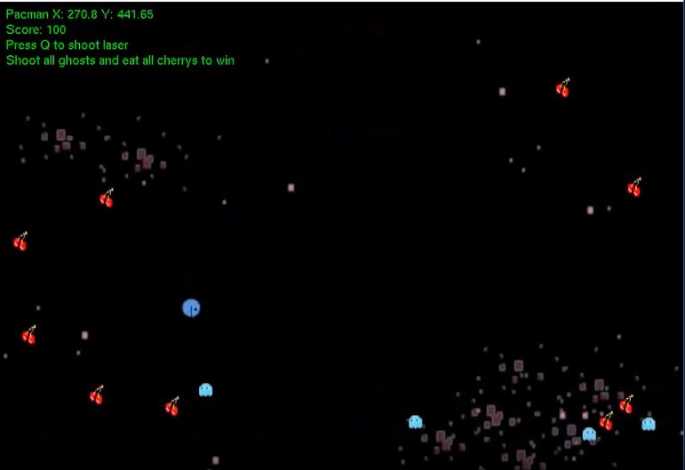

Natalie Harvey's Portfolio
Ambitious Games Programmer at Staffordshire University. I'm in my second year of University and hope
to have a career in the Games Industry.
About Me
I'm a hardworking programmer who enjoys a challenge. A burning desire to succeed
and overcome obstacles. I did my A-Levels in Maths, Physics and Computer Science
in order to get a strong foundation to program for games.
I first began to enjoy video games whilst playing on the Nintendo 64 and I then began to play on the Wii, Xbox 360, Playstation 4 in my later years. When choosing my options for GCSE, Computer Science was offered as a choice subject and upon choosing Computer Science I decided to combine the two things I love. Programming and Games.
Portfolio
Throughout A-Levels in Computer Science to University Course in Computer Games Programming, I have built together a portfolio of games and programming projects.
Personal Projects
AI Flocking
Using C++ and following the simple rules of cohesion, alignment and separation made by Craig
Reynolds, these boids(little squares) were created to behave as a flock. Skeleton code was
given that had the squares already made and a few mathematical functions were provided that
did arithmetic on 3D vectors.
Coded Solution on GitHub"
Youtube Video: AI Flocking Video

Reflection:
To expand on this project a few obstacles could be added for the agents to avoid and the wall
clipping could be perfected.
Fresher's Game Jam
Upon taking part in a game jam in the first week of university, each team was instructed to
create a game with a theme. The theme for our team was Satan . An idea for Satan Runner was
formed. Player controls Satan running on top of a train and must avoid the vicar shots before
reaching the Pope. This was done as part of a team of 5, with my task to code the vicar.
The group came first place in the game jam.
Playable Version:
Satan Runner Playable Version
University Assignments
Mario Bros
The task was to take the skeleton code of Mario Bros and make a game out of it.
SDL was used.
Youtube Video: Mario Bros Video

Reflection:
In order to improve on this project, level 2 could have been created with
more game features to increase playability. Level 1 had the possibility
of having the floors react to collision from beneath as such in the original
game.
Making a Scene
One assignment that was completed at university using C++. An OBJ Loader was
written which read obj files and loaded them into the scene.
Youtube Video: Making a Scene Video

Reflection:
For this assignment, it was not required to make a game or have the user interact
with the scene frequently. Although more interactive features besides the camera movement
and the rotation of textured cubes could have been included.
Pacman
The first game made while at University was the idea of making a game similar to Pac-Man.
We got given the skeleton code and followed tutorials. I hope to progress further and
create more refined games in the future.
Youtube Video: Pacman Recreation Video

Reflection:
Looking back on this assignment, a lot stands out that can be improved upon. It is simple and
lacks replayability. I'll be using this as a reference to my progression.
A-Level Computer Science Coursework
Ball Platformer
In this A-Level Computer Science assignment, a simple 2D platformer game was made. In this game
a ball is controlled and must reach the end without colliding with pyramids. This was done in
Unity using C#. The Ball Platformer was my first game.
Youtube Video: Ball Platformer Video

Reflection:
It is simple game with a large amount of documentation that was involved. The text needs to be
bigger to be more readable and in the top left corner. Instead of a finish point, the platforms
could be precedurally generated with the camera moving on its own accord to incread the replayability.
Special effects added to the gem when picked up would give some feedback to the player as well as
audio.